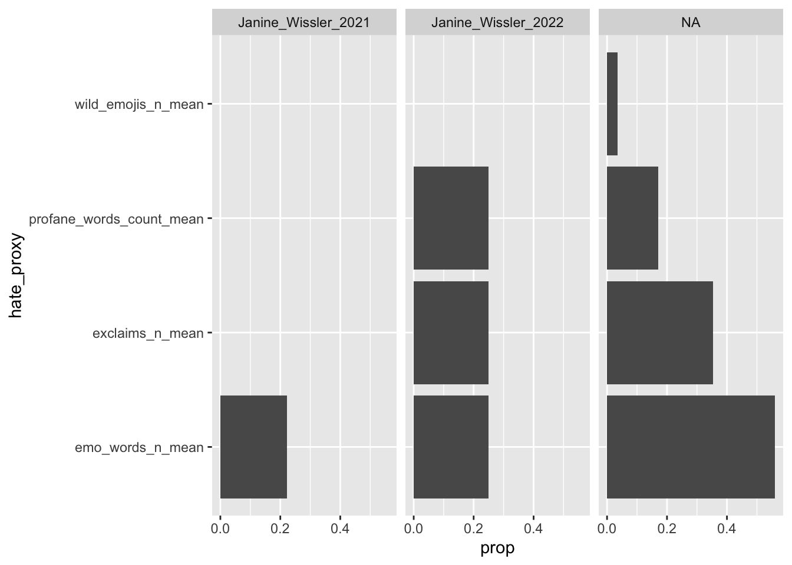
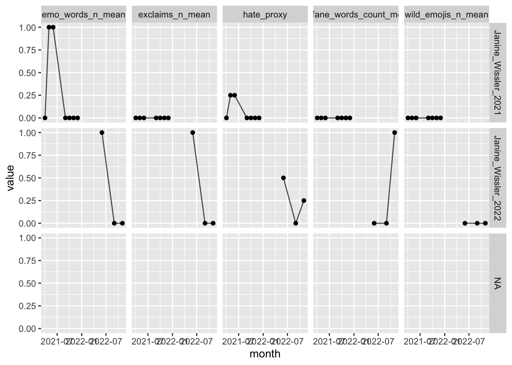

library(tidyverse)
library(tidymodels)
library(easystats)
library(tidytext)
library(textrecipes)
library(tictoc) # Zeitmessung
library(beepr) # piebt, wenn fertig
library(remoji) # Emojis
library(feather) # Daten speichern
library(pradadata) # Hilfsdaten wie Schimpfwoerter
library(lubridate) # Datum und Zeit
library(tokenizers)
library(feather) # feather data
library(pradadata) # helper data
library(remoji) # processing emojis8 Fallstudie Hatespeech
Wir sagen vorher, welche Tweets an führende deutsche Politikis Hassrede bzw. hasserfüllte Rede enthalten.
8.1 Vorab
8.1.1 Lernziele
- Sie können grundlegende Verfahren zur Klassifikation von Hatespeech einsetzen und erklären
- Sie können mit echten Daten umgehen im Sinne eines Projektmanagement von Data Science
8.1.2 Benötigte R-Pakete
8.2 Daten
8.2.1 Train- und Testdaten
d1 <- read_rds("objects/d1.rds") # Traindaten einlesenIn Train- und Test-Datensatz aufsplitten:
d_split <- initial_split(d1, strata = c1)
d_train <- training(d_split)
d_test <- testing(d_split)8.2.2 Vorhersagedaten
Wir importieren die Tweets führender deutscher Politikis.
Für diese Daten haben wir keine Werte der Zielvariablen. Wir können nur vorhersagen, aber nicht unsere Modellgüte berechnen. Diese Daten bezeichnen wir als Vorhersagedaten.
Pfad zu den Daten:
tweet_data_path <- "/Users/sebastiansaueruser/github-repos/hate-speech/data-raw/tweets-small"
file.exists(tweet_data_path)[1] TRUEDie Nutzungsrechte von Twitter erlauben nicht, diese Daten öffentlich zu teilen.
tweet_data_files_names <-
list.files(
path = tweet_data_path,
full.names = TRUE,
pattern = ".rds")
names(tweet_data_files_names) <-
list.files(
path = tweet_data_path,
full.names = FALSE,
pattern = ".rds") %>%
str_remove(".rds$") %>%
str_remove("^tweets-to-")
tweet_data_files_names BMWK_2021
"/Users/sebastiansaueruser/github-repos/hate-speech/data-raw/tweets-small/tweets-to-BMWK_2021.rds"
Janine_Wissler_2021
"/Users/sebastiansaueruser/github-repos/hate-speech/data-raw/tweets-small/tweets-to-Janine_Wissler_2021.rds"
Janine_Wissler_2022
"/Users/sebastiansaueruser/github-repos/hate-speech/data-raw/tweets-small/tweets-to-Janine_Wissler_2022.rds" So lesen wir alle Dateien aus diesem Ordner ein. Zunächst erstellen wir uns eine Helper-Funktion:
source("funs/read-and-select.R")Die Funktion read_and_select mappen wir auf alle Datendateien:
tic()
ds <-
tweet_data_files_names %>%
map_dfr(read_and_select, .id = "dataset")Data file was read.
Data file was read.
Data file was read.toc()1.73 sec elapsedEin Blick zur Probe:
ds %>%
glimpse()Rows: 10,310
Columns: 9
$ dataset <chr> "BMWK_2021", "BMWK_2021", "BMWK_2021", "BMWK_2021", "BMW…
$ id <chr> "1476982045268185091", "1476948509706407942", "147694476…
$ author_id <chr> "749510675811139585", "146337393", "841768687245918208",…
$ created_at <chr> "2021-12-31T18:22:15.000Z", "2021-12-31T16:08:59.000Z", …
$ text <chr> "@BMWi_Bund @twittlik @Pendolino70 @nextmove_de Richtig.…
$ retweet_count <int> 0, 0, 0, 0, 0, 0, 1, 0, 0, 0, 0, 0, 0, 0, 0, 0, 0, 0, 0,…
$ reply_count <int> 0, 2, 1, 0, 0, 0, 0, 0, 2, 0, 0, 0, 0, 0, 0, 0, 0, 2, 0,…
$ like_count <int> 0, 0, 1, 0, 0, 1, 1, 3, 3, 0, 3, 0, 0, 1, 0, 0, 1, 2, 1,…
$ quote_count <int> 0, 0, 1, 0, 0, 0, 0, 0, 0, 0, 0, 0, 0, 0, 0, 0, 0, 0, 0,…Da wir den Elementen von tweet_data_files_names Namen gegeben haben, finden wir diese Namen praktischerweise wieder in ds.
Eine Alternative zum Format RDS besteht im Format Feather:
Feather: fast, interoperable data frame storage Feather provides binary columnar serialization for data frames. It is designed to make reading and writing data frames efficient, and to make sharing data across data analysis languages easy.
8.2.3 Worteinbettungen
Wie in Kapitel 7.7.1 dargestellt, importieren wir unser FastText-Modell.
word_embedding_twitter <- read_rds(file = "/Users/sebastiansaueruser/datasets/Twitter/word_embedding_twitter.rds")Wie viel Speicher benötigt das Worteinbettungsobjekt?
format(object.size(word_embedding_twitter), units = "Mb")[1] "108.3 Mb"8.2.4 Hilfsdaten
data("schimpwoerter")
data("sentiws")
data("wild_emojis")8.3 Aufbereiten der Vorhersagedaten
8.3.1 Hilfsfunktionen
source("funs/helper-funs-recipes.R")8.4 Rezept
Da wir schon ein Rezept “trainiert” haben, können wir die Test-Daten einfach mit dem Rezept “backen”.
Streng genommen müssten wir nicht mal das tun, denn tidymodels würde das beim Vorhersagen für uns übernehmen. Aber es ist nützlich, die Daten in aufbereiteter Form zu sehen, bzw. sie direkt zugänglich zu haben.
rec2 <-
recipe(c1 ~ ., data = select(d_train, text, c1, id)) %>%
update_role(id, new_role = "id") %>%
step_text_normalization(text) %>%
step_mutate(text_copy = text,
profane_n = map_int(text_copy, count_profane, profane_list = schimpfwoerter$word),
emo_words_n = map_int(text_copy, count_emo_words, emo_list = sentiws$word),
emojis_n = map_int(text_copy, count_emojis, emoji_list = emoji(list_emoji(), pad = FALSE)),
wild_emojis_n = map_int(text_copy, count_wild_emojis, wild_emoji_list = wild_emojis$emojis)
) %>%
step_textfeature(text_copy) %>%
step_tokenize(text, token = "tweets") %>%
step_stopwords(text, language = "de", stopword_source = "snowball") %>%
step_word_embeddings(text, embeddings = word_embedding_twitter)
rec28.4.1 Preppen und Backen
Preppen:
tic()
rec2_prepped <- prep(rec2)
toc()29.377 sec elapsedBraucht ganz schön Zeit …
Zur Sicherheit speichern wir auch dieses Objekt ab.
# write_rds(rec2_prepped, "objects/rec2_prepped.rds")
rec2_prepped <- read_rds("/Users/sebastiansaueruser/datasets/Twitter/hate-classific/rec2_prepped.rds")Als nächstes kommt das Backen der Vorhersagedaten. Das ist die Stelle, an der zum ersten Mal die neuen Daten (die Vorhersagedaten) ins Spiel kommen.
tic()
d_predict_baken <-
bake(rec2_prepped, new_data = ds)
d_predict_baken$id <- ds$id
toc()
beepr::beep()Puh, das Backen dauert - bei großen Datensätzen - gefühlt ewig! Daher ist das beepen praktisch: Es klingelt, wenn die Berechnung fertig ist.
Zur Erinnerung: d_predict_baken ist der “gebackene” Testdatensatz. Der Testdatensatz also, auf dem die ganzen Operationen der Vorverarbeitung angewandt wurden.
8.4.2 Git Large File System
Wenn Sie Ihre Arbeit mit einem Versionierungssystem schützen - und Sie sollten es tun - dann verwenden Sie vermutlich Git. Git ist für Textdateien ausgelegt - was bei Quellcode ja auch Sinn macht, und für Quellcode ist Git gemacht. Allerdings will man manchmal auch binäre Dateien sichern, etwa Daten im RDS-Format. Solche binären Formante funktionieren nicht wirklich aus der Sicht von Git, sie lassen sich nicht zeilenweise nachverfolgen. Kurz gesagt sollte man sie aus diesem Grund nicht in Git nachverfolgen. Eine bequeme Lösung ist dasLarge File System von Github (git lfs), das diese großen Dateien außerhalb des Git-Index verwaltet. Trotzdem sieht es für Nutzis aus wie immer, ist also sehr komfortabel. Dazu ist es nötig, git lfs zu installieren.
8.4.3 Metadaten
Metadaten wieder hinzufügen:
d_predict2 <-
d_predict_baken %>%
left_join(ds, by = "id") %>%
relocate(dataset, id, author_id, created_at, text, retweet_count, reply_count, quote_count, .after = id) %>%
mutate(id = as.integer(id))Warning in mask$eval_all_mutate(quo): NAs introduced by coercion to integer
rangeLeider müssen wir id in Integer umwandeln, das wir dies im Rezept auch so gemacht hatten. Dabei geht die Spalte kaputt, bzw. die Daten werden NA, da die resultierende Integerzahl zu groß für R ist. Aber nicht so schlimm: Wir fügen sie später wieder hinzu.
Spaltennamen mal anschauen:
names(d_predict2)[1:33] [1] "dataset" "id"
[3] "author_id" "created_at"
[5] "text" "retweet_count"
[7] "reply_count" "quote_count"
[9] "profane_n" "emo_words_n"
[11] "emojis_n" "wild_emojis_n"
[13] "textfeature_text_copy_n_words" "textfeature_text_copy_n_uq_words"
[15] "textfeature_text_copy_n_charS" "textfeature_text_copy_n_uq_charS"
[17] "textfeature_text_copy_n_digits" "textfeature_text_copy_n_hashtags"
[19] "textfeature_text_copy_n_uq_hashtags" "textfeature_text_copy_n_mentions"
[21] "textfeature_text_copy_n_uq_mentions" "textfeature_text_copy_n_commas"
[23] "textfeature_text_copy_n_periods" "textfeature_text_copy_n_exclaims"
[25] "textfeature_text_copy_n_extraspaces" "textfeature_text_copy_n_caps"
[27] "textfeature_text_copy_n_lowers" "textfeature_text_copy_n_urls"
[29] "textfeature_text_copy_n_uq_urls" "textfeature_text_copy_n_nonasciis"
[31] "textfeature_text_copy_n_puncts" "textfeature_text_copy_politeness"
[33] "textfeature_text_copy_first_person" 8.5 Vorhersagen
Wir beziehen uns auf das Modell von Kapitel 7.8.4.
fit3 <- read_rds("/Users/sebastiansaueruser/github-repos/datascience-text/objects/chap_classific_fit3.rds")
fit3_final_train <- read_rds("/Users/sebastiansaueruser/datasets/Twitter/hate-classific/fit3_final_train.rds")Und nutzen dann die predict-Methode von {tidymodels}:
tic()
d_predicted_values <- predict(fit3_final_train, d_predict2)
toc()
beep()Puh, hier ist mein Rechner abgestürzt, als ich es mit ca. 2 Millionen Tweets versucht habe!
Besser, wir probieren erstmal mit einem winzigen Teil der Daten, ob unsere Funktion “im Prinzip” oder “grundsätzlich” funktioniert:
d_predicted_values_tiny <- predict(fit3_final_train, head(d_predict2))Error:
! Can't convert `data$id` <integer> to match type of `id` <character>.d_predicted_values_tinyError in eval(expr, envir, enclos): object 'd_predicted_values_tiny' not foundFunktioniert! Gut! Also weiter.
Passt!
8.6 Ergebnisse
8.6.1 Hass-Proxis pro Politiki insgesamt
res_summary1 <-
d_predict2 %>%
group_by(dataset) %>%
summarise(emo_words_n_mean = mean(emo_words_n),
profane_words_count_mean = mean(profane_n),
wild_emojis_n_mean = mean(wild_emojis_n),
exclaims_n_mean = mean(textfeature_text_copy_n_exclaims))
res_summary1_long <-
res_summary1 %>%
pivot_longer(-dataset, names_to = "hate_proxy", values_to = "prop")res_summary1_long %>%
ggplot(aes(x = prop, y = hate_proxy)) +
geom_col() +
facet_wrap(~ dataset)
8.6.2 Hass-Proxis pro Politiki im Zeitverlauf
res_summary2 <-
d_predict2 %>%
select(created_at, profane_n, dataset, emo_words_n, wild_emojis_n, textfeature_text_copy_n_exclaims) %>%
mutate(month = ymd_hms(created_at) %>% round_date(unit = "month")) %>%
group_by(month, dataset) %>%
summarise(emo_words_n_mean = mean(emo_words_n),
profane_words_count_mean = mean(profane_n),
wild_emojis_n_mean = mean(wild_emojis_n),
exclaims_n_mean = mean(textfeature_text_copy_n_exclaims)) %>%
rowwise() %>%
mutate(hate_proxy = mean(c_across(emo_words_n_mean:exclaims_n_mean))) %>%
ungroup()`summarise()` has grouped output by 'month'. You can override using the
`.groups` argument.res_summary2 %>%
head()| month | dataset | emo_words_n_mean | profane_words_count_mean | wild_emojis_n_mean | exclaims_n_mean | hate_proxy |
|---|---|---|---|---|---|---|
| 2021-04-01 | Janine_Wissler_2021 | 0 | 0 | 0 | 0 | 0.00 |
| 2021-05-01 | Janine_Wissler_2021 | 1 | 0 | 0 | 0 | 0.25 |
| 2021-06-01 | Janine_Wissler_2021 | 1 | 0 | 0 | 0 | 0.25 |
| 2021-09-01 | Janine_Wissler_2021 | 0 | 0 | 0 | 0 | 0.00 |
| 2021-10-01 | Janine_Wissler_2021 | 0 | 0 | 0 | 0 | 0.00 |
| 2021-11-01 | Janine_Wissler_2021 | 0 | 0 | 0 | 0 | 0.00 |
Langifizieren fürs Plotten:
res_summary2_long <-
res_summary2 %>%
pivot_longer(emo_words_n_mean:hate_proxy)
res_summary2_long %>%
head()| month | dataset | name | value |
|---|---|---|---|
| 2021-04-01 | Janine_Wissler_2021 | emo_words_n_mean | 0 |
| 2021-04-01 | Janine_Wissler_2021 | profane_words_count_mean | 0 |
| 2021-04-01 | Janine_Wissler_2021 | wild_emojis_n_mean | 0 |
| 2021-04-01 | Janine_Wissler_2021 | exclaims_n_mean | 0 |
| 2021-04-01 | Janine_Wissler_2021 | hate_proxy | 0 |
| 2021-05-01 | Janine_Wissler_2021 | emo_words_n_mean | 1 |
res_summary2_long %>%
count(month)| month | n |
|---|---|
| 2021-04-01 | 5 |
| 2021-05-01 | 5 |
| 2021-06-01 | 5 |
| 2021-09-01 | 5 |
| 2021-10-01 | 5 |
| 2021-11-01 | 5 |
| 2021-12-01 | 5 |
| 2022-06-01 | 5 |
| 2022-09-01 | 5 |
| 2022-11-01 | 5 |
| NA | 5 |
res_summary2_long %>%
ggplot() +
aes(x = month, y = value) +
facet_grid(dataset ~ name) +
geom_point() +
geom_line(group=1, alpha = .7)Warning: Removed 5 rows containing missing values (`geom_point()`).Warning: Removed 5 rows containing missing values (`geom_line()`).